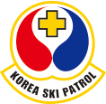

스키 구조 요원

스키 구조 요원 소개

-
스키구조요원의
정의- 체육시설의 설치 · 이용에 관한 법률 제24조 및 동시행규칙 제 23조 [별표6]
- 안전, 위생기준 관련 스키장에서 슬로프를 순찰하며 이용자의 안전사고 예방과 사고발생 시 인명구조 및 환자후송 등에 원활히 대처할 수 있는 자로서 스키어가 보다 좋은 환경의 스키장을 이용할 수 있게 함은 물론 스키의 건전한 발전에 기여하고 있다
-
스키구조요원의
임무- 사고예방 활동
-
-
1. 안전유지와 위험예지
-

2. 시설의 점검 및 정비
-
3. 스키 예절 지도 및 감독
-
- 안전사고를 예방하는 최선의 방법은 스키인의 자질향상 (스키기술 교육으로 자신의 실력에 맞는 슬로프 선택 등) 스키예절, 안전수칙준수가 우선되어야 한다. 현장에서 스키패트롤의 예절지도와 감독은 매우 어려우면서도 중요한 역할을 하는데 이것은 높은 수준의 기술이 필요하다.
-
- 응급처치
-
- 1. 사고 발생시 응급처치
- 2. 응급처치 지식과 기술숙달의 필요성
- 3. 응급처치 및 후송용 장비 (별도로 구성한다)
- A. 기본장비 : 스키세트, 무전기, 카메라, 녹음기, 구급낭
- B. 휴대용 응급처치 장비 : 붕대, 삼각건, 소독약, 핀셋, 지혈대, 압박붕대, 거즈, 휴대용부목, 가위, 견인로프, 드라이버, 칼, 와세린, 솜
- C. 후송용장비 : 후송용썰매 (toboggan, 퀵스프린트, 백보드), 에어플에인스프린트, 보온용덮개, 견인로프
- ※ 유지보수 상태 양호해야함
-
- 현장의 확인 및 보존
-
- 스키손상에 따른 원인 분석 및 사고 발생에 따른 법적인 문제 해결에 도움을 주고, 사고예방에 필요한 자료를 제공한다.
- 사고예방에 필요한 구성 인자
- 1. 자연조건에 의한 요인 (설질, 기상, 적설 장애물)
- 2. 사람에 의한 요인(혼잡, 기술부족, 충돌)
- 3. 기계, 장비에 의한 요인(설상차, 압설차, 리프트)
-
- 기록유지 및 보고
- 스키패트롤의 기본 임무의 하나로 후송 후 반드시 후송된 부상자에 대한 현장에서부터 의무기관까지 도착하여 발생되는 내용을 비교적 자세하게 메모하여 당일보고설르 제출하여양 한다. 가능하다면 의무실을 떠나 2차 이동에 관한 사항을 포함할 수 있다
- ※ 현장보존을 위해 카메라로 현장촬영을 하거나 목격자 확보 및 인적파악, 녹취 등의 필수적이다.